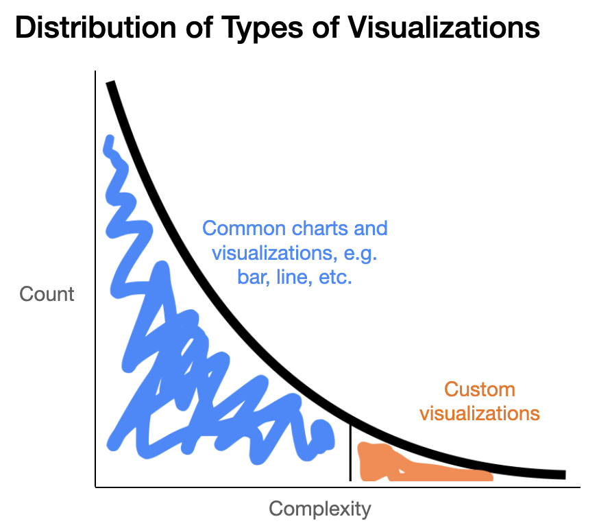

D3 Crash Course
Alex Cabrera, Februray 28, 2021
Why D3?
Libraries like Vega, Vega-Lite, matplotlib, and ggplot can be used to create a wide range of visualizations and graphs. These libraries define encodings from data to a fixed set of marks and representations. But what if we want to create a complex visualization not defined by Vega?
D3 is a lower-level library in which users directly bind data to visual representations. This flexibility enables a huge range of custom, complex visualizations. At the same time, it requires significant effort to implement features like tooltips and axes labels that are automatic in Vega.
These crash course exercises, paired with the presentation slides,
provide an overview of the key components of D3. Running this website in
development mode, you should see the different exercises, Q#.#,
in the script.js files of each subpage.